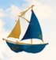
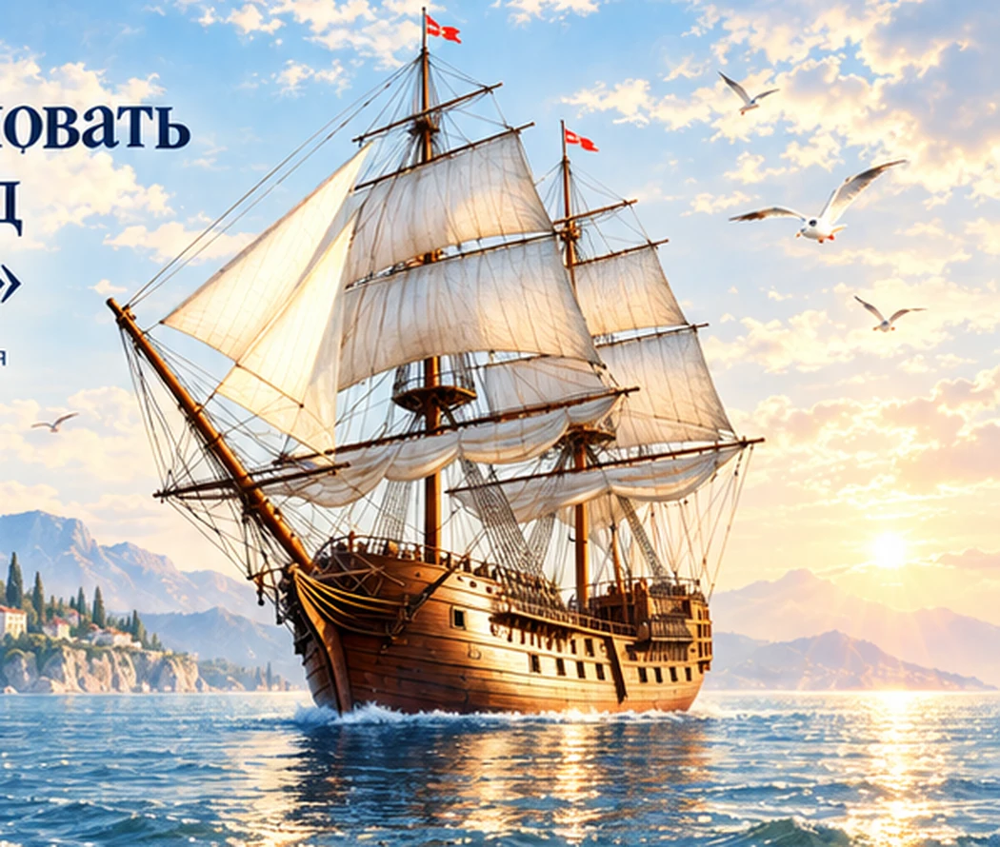
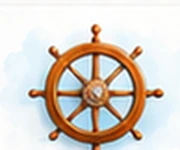
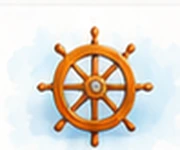
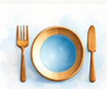
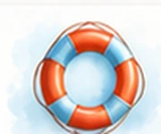

"По тропе"
07.10.2026 г. Занятия физической культуры закладывают фундамент здоровья и развития малышей младшей группы Карапуз. Дети активно двигались в игровой форме прыгали по «волшебным кочкам», проп
Читать →
Муниципальное бюджетное дошкольное образовательное учреждение детский сад № 7 «Кораблик»С заботой о детстве,с верой в большое будущее!
+7 (86354) 2-17-57г. Батайск, Ростовская область
Маленькие открытия каждый день
Тёплая, безопасная и вдохновляющая среда, где каждый ребёнок растёт, развивается и открывает для себя большой мир!

Основные сведения→Документы→Образование→
Педагогический состав→
Организация питания→
Безопасность→07.10.2026 г. Занятия физической культуры закладывают фундамент здоровья и развития малышей младшей группы Карапуз. Дети активно двигались в игровой форме прыгали по «волшебным кочкам», проп
Читать →
05.10.2026 г. Осень — это не только яркие листья и прохладные дождики. Это ещё и время щедрых даров природы! В нашей средней группе «Морская сказка», прошло увлекательное занятие по рисовани
Читать →
22.09.2026 г. В нашем детском саду №7 «Кораблик» педагоги особое внимание уделяют проблеме безопасности детей (безопасности на дорогах, пожарной безопасности, безопасности на воде или на сол
Читать →